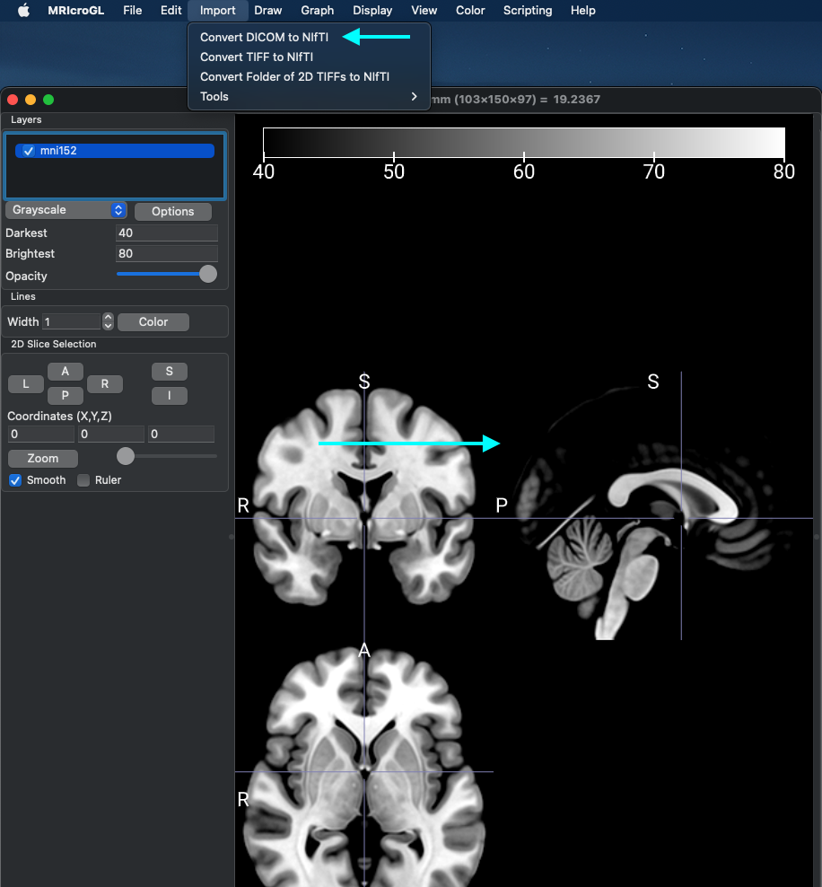
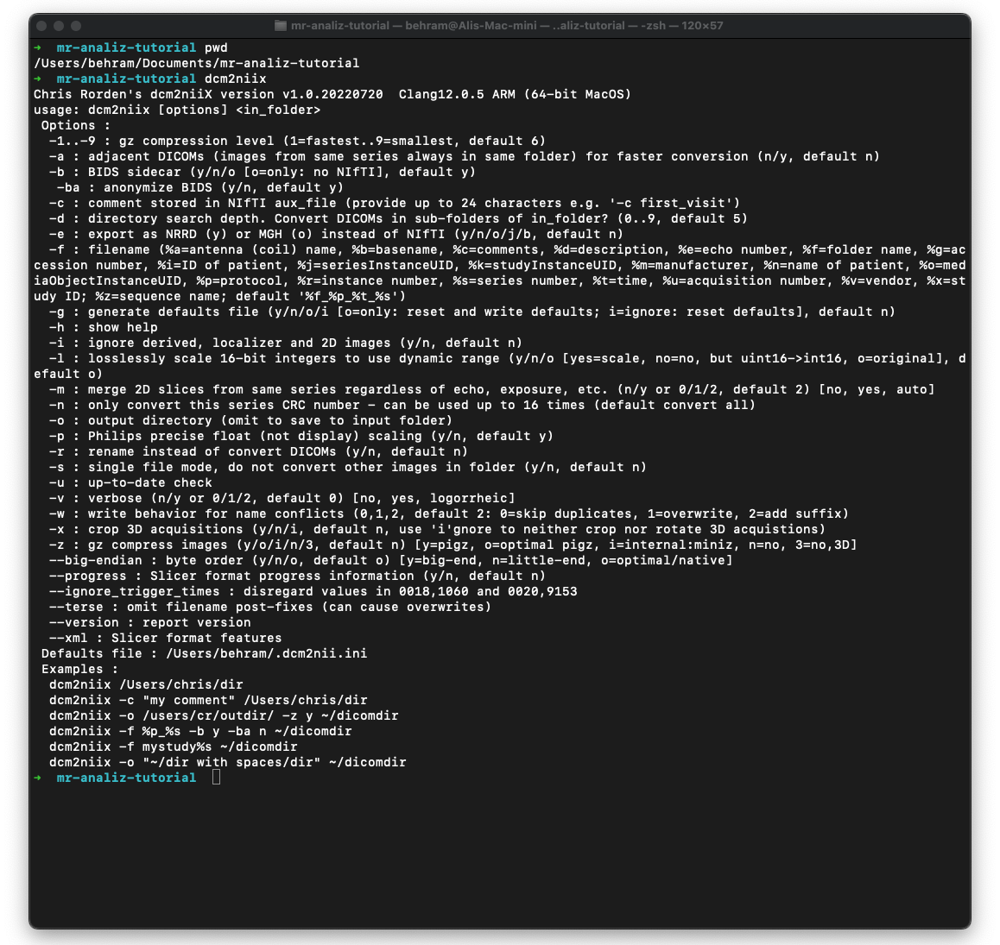

DICOM > NIfTI Dönüştürülmesi
DICOM nedir?
MR görüntüleme cihazından export edilen tüm datalar DICOM (Digital Imaging and Communications in Medicine) adı verilen standart bir formatla gelir.
Bu format yalnızca MR datalarına spesifik değil, tüm medikal görüntüleme yöntemlerinde kullanılan bir standarttır.
E-nabız veya pacs gibi sistemlerde bu görüntüler çeşitli DICOM görüntüleyici programlar aracılığıyla görüntülenir.
NIfTI nedir?
NIfTI MR görüntülerinin analizinin ve depolanmasının kolaylaştırılması amacıyla ortaya çıkmış bir formattır.
Bu formattaki datalar .nii veya .nii.gz uzantılarına sahip olabilir. *.nii.gz uzantılı dosyalar sıkıştırılmış dosyalardır ve hafızada kapladıkları alan açısından daha verimlilerdir.
'dcm2niix'
MR görüntülerinin DICOM'dan NIfTI'ye dönüştürülmesi dcm2niix adlı program ile yapılır. Bu programın command-line (terminal üzerinden çalışan) versiyonu veya MRicroGL adlı programla birlikte gelen görsel arayüzlü versiyonu kullanılabilir.
MR analizlerini kendi kişisel bilgisayarında yapmak isteyenler öncelikle bu programı indirmelidir.
'dcm2niix' Kurulumu
Ön not: Benim kendi tercihim terminal üzerinden çalışan ve görsel arayüzü olmayan versiyonunu kullanmak. Output'ları modifiye etmeyi ve bir çok dosyanın aynı anda çevirilmesini otomatize etmeyi bu şekilde daha kolay buluyorum.
Command-line versiyonu aşağıdaki komutu terminale yapıştırarak indirilebilir.
pip install dcm2niix
veya çalışmadıysa;
pip3 install dcm2niix
Görsel arayüze sahip versiyonu da aşağıdaki linkten indirilebilen MRicroGL isimli programla birlikte gelmektedir.
https://www.nitrc.org/projects/mricrogl/
dcm2niix programına resimdeki gibi Import > Convert DICOM to Nifti seçilerek ulaşılır.

Programın görsel arayüzü de kullandığınız sisteme göre değişme ihtimaliyle beraber alttaki resimdeki gibi olacaktır.

'dcm2niix' Nasıl Kullanılır?
Bu kısımda terminal üzerinden çalışan versiyonun nasıl kullanılacağından bahsedeceğim. Görsel arayüzlü versiyonun nasıl kullanıldığını açıklamaya pek gerek olduğunu düşünmüyorum, arayüzde ayarlar ve nasıl kullanıldığı net bir şekilde görülüyor.
Öncelikle bir terminal penceresi açıp, dcm2niix yazarak programı çağırıp, ne tür argümanlar aldığını inceleyelim.

Resimde görülen -b -v -z -f gibi listelenmiş her bir madde bu programın alabileceği argümanları (ya da değiştirebileceğimiz parametreleri) gösteriyor. Bunların birçoğu için default değerler resimde görüldüğü gibi parantez içinde verilmiş. Yani bu parametreleri özel olarak belirtmediğiniz taktirde default değerleri kullanacak.
Bu listedekilerden sadece birkaçına dikkat edeceğiz.
-
-v bu parametre programın yaptığı şeyleri terminalde görmeniz için logluyor. Hatalarla karşılaşma durumunda hatanın hangi noktada oluştuğunu anlamak için -v y şeklinde kullanılmalı (1)
-
-z bu parametrenin default'u yukarıda da görülebileceği gibi 'n', yani output'u sıkıştırılmış dosya şeklinde vermiyor default olarak. (.nii.gz uzantılı vermiyor, .nii uzantılı şekilde veriyor.) Depolama alanından kazanmak için bu parametreyi değiştirmemiz gerekiyor. -z y şeklinde ekleme yapacağız programı çalıştırırken. (2)
-
-f parametresı output dosyasının isimlendirilmesi ile ilgili. Yapacağınız çalışmalarda bir düzen olması açısından bir isimlendirilme şeması takip edilmeli. Grup isimlerine göre bir prefix seçilip, katılımcı koduna göre de bir numara verilebilir. Örn; cont01, pt03. Bu parametre aynı zamanda % işareti ile MR datasının çeşitli özelliklerini isime ekleyebiliyor. (3)
- %p ile datanın ismine hangi protokol ile çekildiği eklenebilir. Dönüştürme sonrasında hangi datanın hangi protokolle çekildiğini ayırt etmek için en azından bu yapılmalıdır.
- Örnek kullanım; -f cont01_%p
-
-o parametresi dönüştürülen dosyaların hangi klasöre gönderileceğini belirlemek için kullanılıyor. Bu parametre verilmediği taktirde Nifti'ye dönüştürülen dosyalar DICOM dosyalarının olduğu klasöre gider. (4)
-
Dosyaların lokasyonları analiz programlarını çalıştırırken çok büyük öneme sahip. O yüzden, sistemli ve düzenli olmak açısından DICOM klasörünün içerisine veya başka belirlenmiş bir lokasyona yeni bir klasör açıp output klasörü olarak onu göstermeyi tavsiye ederim.
-
Örn; cont01 isimli DICOM dosyalarının içine 'mkdir cont01/nifti' komutu ile bir klasör açılıp output olarak bu klasör verilebilir.
-
-
En son olarak da herhangi bir - içeren argüman kullanmadan MR datasını Nifti'ye çevireceğimiz katılımcının DICOM dosyalarının olduğu klasörü vereceğiz. (5)
Terminale girilecek kodun son hali şuna benzemeli:
dcm2niix -v y -z y -f cont01_%p -o cont01/nifti cont01
'dcm2niix' Kullanımına bir örnek
Aşağıdaki resimlerdede cont01 kodlu bir katılımcının DICOM dosyalarını içeren klasörün bir resmini görüyorsunuz.
Terminal de ilk satırda görülebileceği gibi cont01 klasörünü içeren mr-analiz-tutorial klasöründe çalışıyor. * >Terminalin hangi klasörde çalıştığı gibi temel bilgileri ilerleyen kısımlarda tekrar etmeyeceğim, örnek olması açısından buraya ekledim. * > Bir diğer not olarak da cont01 klasörünün içindeki nifti klasörü benim yukarıda bahsettiğim şekilde düzenli olmak açısından kendi oluşturduğum bir klasör.

Program çalışmayı bitirip dönüştürmeyi tamamladıktan sonra nifti klasörünün içinde oluşan dosyalara ve isimlerine baktığımızda, -f argümanıyla verdiğimiz şekilde istediğimiz gibi sonuç aldığımızı görebiliriz.